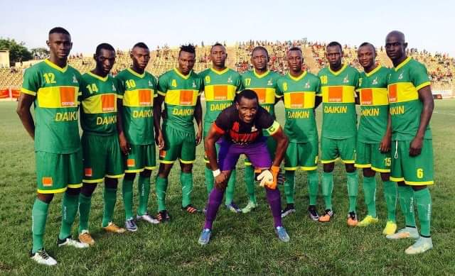
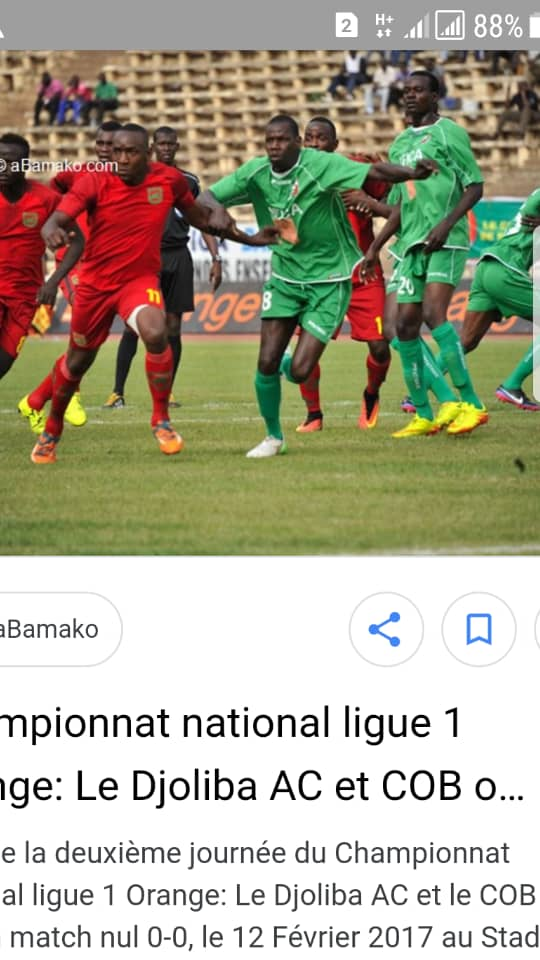
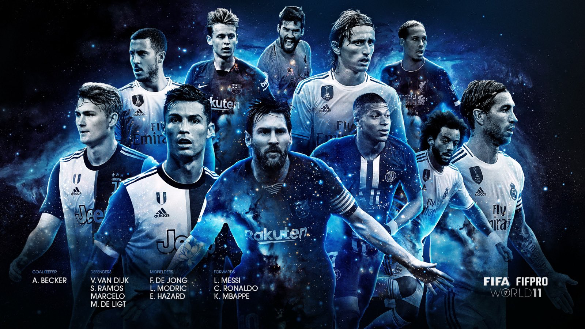
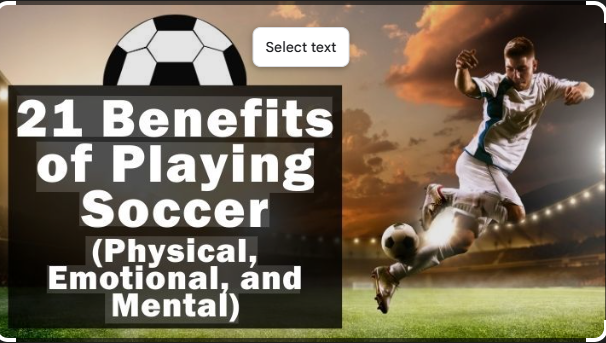

What is Soccer?
Soccer, known as football outside North America, is the world's most beloved sport. It is a dynamic team sport where two teams of eleven players each compete to move a ball into the opposing team's goal. The sport emphasizes skill, strategy, teamwork, and physical fitness. Whether played casually in local parks or professionally in world-class stadiums, soccer transcends cultures, languages, and borders.

Core Fundamentals
The game consists of two 45-minute halves, scored by kicking the ball into the opposing goal. Players use their feet primarily, but can also use their head or body (except arms and hands, except for the goalkeeper). The simplicity of the rules combined with the complexity of play makes soccer accessible to everyone yet challenging to master. From youth leagues to professional clubs like Barcelona, Manchester United, and Real Madrid, soccer captivates billions of fans worldwide.
| Position | Role | Key Skills |
|---|---|---|
| Goalkeeper | Defends the goal | Reflexes, Decision-making, Distribution |
| Defender | Protects the back line | Positioning, Tackling, Heading |
| Midfielder | Connects defense and attack | Passing, Vision, Stamina, Control |
| Forward | Scores goals | Shooting, Dribbling, Agility, Timing |
Who Plays Soccer?
Soccer is a global sport played by people of all ages, genders, and backgrounds. From young children just learning the game to professional athletes earning millions, soccer welcomes everyone. The sport's inclusivity is one of its greatest strengths—it requires minimal equipment and can be played almost anywhere, making it truly democratic. Whether you're a casual enthusiast playing with friends or a dedicated professional training daily, soccer has a place for you.

Personal photo: Showing my son's passion for the game and the joy he gets from playing
Famous Players
Legendary players like Pelé, Diego Maradona, Zinedine Zidane, and Ronaldinho have shaped the sport's history. Contemporary superstars including Cristiano Ronaldo, Lionel Messi, Kylian Mbappé, and Alexia Putellas continue to inspire millions. These athletes demonstrate the pinnacle of skill, dedication, and passion. Each generation produces new heroes who leave lasting legacies and inspire the next wave of players to pursue excellence on the pitch.
When Can You Play Soccer?
Soccer is a year-round sport with opportunities to play in virtually any season. Professional leagues operate on different schedules worldwide, with European clubs playing from August to May, while other regions have different calendars. The sport adapts to climate conditions—beach soccer thrives in summer, while indoor soccer provides opportunities during harsh winters. Youth tournaments span the entire calendar, and recreational leagues operate continuously. The beauty of soccer is that there's always a season, somewhere, for someone to play.
| Season | Best For | Notable Leagues |
|---|---|---|
| August - May | Professional club play | Premier League, La Liga, Serie A, Bundesliga |
| June - July | International tournaments | UEFA Euro, Copa América, African Cup of Nations |
| November - December | World Cup Finals | FIFA World Cup (every 4 years) |
| Year-Round | Youth and recreational | Local clubs, amateur leagues, casual pickup games |

Personal photo: Getting ready before the match, showing the dedication and mental preparation that goes into soccer
Where is Soccer Played?
Soccer is played everywhere—from the grandest stadiums holding 100,000+ spectators to dusty fields in remote villages. The sport's accessibility means it requires only a flat surface and goals (or markers). Professional teams play in state-of-the-art facilities with natural and artificial surfaces. Neighborhood parks host countless youth and recreational leagues. Beaches, gymnasiums, and rooftops all become soccer venues. The FIFA World Cup brings together nations, while local clubs create communities. Whether it's Old Trafford, Camp Nou, or a field by your home, soccer transforms spaces into theaters of dreams.

Personal photo: The magnificent Bank of America Stadium, showcasing the world-class facilities where professional soccer is played
Top Locations
Europe dominates professional soccer with legendary stadiums like Old Trafford (Manchester), Camp Nou (Barcelona), and Allianz Arena (Munich). South America has produced incredible talent and hosted passionate matches in Buenos Aires and Rio de Janeiro. African nations like Egypt and Nigeria push the sport's boundaries. Asia is rapidly growing with China and Japan investing heavily. North American soccer is experiencing unprecedented growth. Every continent celebrates soccer as part of its culture and identity, each bringing unique playing styles and passionate fan bases.
How Do You Play Soccer?
Playing soccer involves understanding basic rules and developing fundamental skills. The game starts with a kickoff from the center, with players passing, dribbling, and shooting to move the ball toward the opponent's goal. The goalkeeper is the only player allowing hand contact with the ball within their penalty area. Fouls result in free kicks or penalty kicks. The team with the most goals after 90 minutes wins. Beyond rules, success requires effort in training—developing ball control, first touch, passing accuracy, positioning awareness, and team chemistry through dedicated practice and match experience.
| Skill | Description | Training Focus |
|---|---|---|
| Passing | Accurately sending the ball to teammates | Foot placement, power control, vision |
| Dribbling | Running with the ball under control | Close control, change of direction, speed |
| Shooting | Striking the ball toward goal | Follow-through, accuracy, power, timing |
| Heading | Making contact with the ball using the head | Timing, positioning, neck strength |
| Tackling | Winning the ball from opponents | Timing, body positioning, control |

world's class players: One of the greatest soccer players of all time
Why Soccer Matters
Soccer transcends sport—it builds character, creates communities, and connects humanity. The sport teaches teamwork, resilience, discipline, and respect. Young players learn life lessons through competition and collaboration. Communities gather around local clubs, creating bonds that strengthen neighborhoods. Internationally, soccer provides peaceful competition between nations, fostering understanding and friendship. The sport breaks down barriers of language, wealth, and culture. Players develop confidence, fitness, and friendship. Fans find belonging in supporter communities. Soccer impacts mental and physical health, creating healthier, happier people. From grassroots participation to World Cup glory, soccer enriches lives in immeasurable ways.

Personal photo: Celebrating the trophy, capturing the ultimate reward for passion, dedication, and teamwork in soccer
The Beautiful Game's Impact
Soccer has lifted people out of poverty, provided education to millions, and created opportunities for upward mobility. Players like Pelé and Ronaldinho became global ambassadors. The sport funds development in emerging nations. FIFA World Cup generates economic stimulus. Children's soccer programs reduce crime and drop-out rates. Women's soccer has grown explosively, providing opportunities previously unavailable. Para-soccer includes athletes with disabilities. The sport adapts to every circumstance, welcoming everyone. From supporting mental health to creating economic hope, soccer proves its worth extends far beyond the 90 minutes of play on the pitch.
AI Prompts & Image Generation
AI Model Used
Model: Claude 3 (or equivalent AI image generator like DALL-E, Midjourney, or Stable Diffusion)
All Prompts Used
5. Why Section - Goal Celebration:
HTML & CSS Generation
Model: Claude 3.5 Haiku
Prompt Used:
"Create a professional single-page soccer hobby website with embedded CSS. Include sections for What, Who, When, Where, How, Why, and AI Prompts. Implement navigation that shows/hides sections using JavaScript. Use a green and gold color scheme (not default colors). Include a header with h1, navigation with unique sphere dividers, main content with at least 3 items per section including figures with captions, and footer with validation links. Follow CRAP design principles. Make it mobile responsive. Add proper form inputs and tables for content variety. Ensure all semantic HTML5 elements are used correctly."